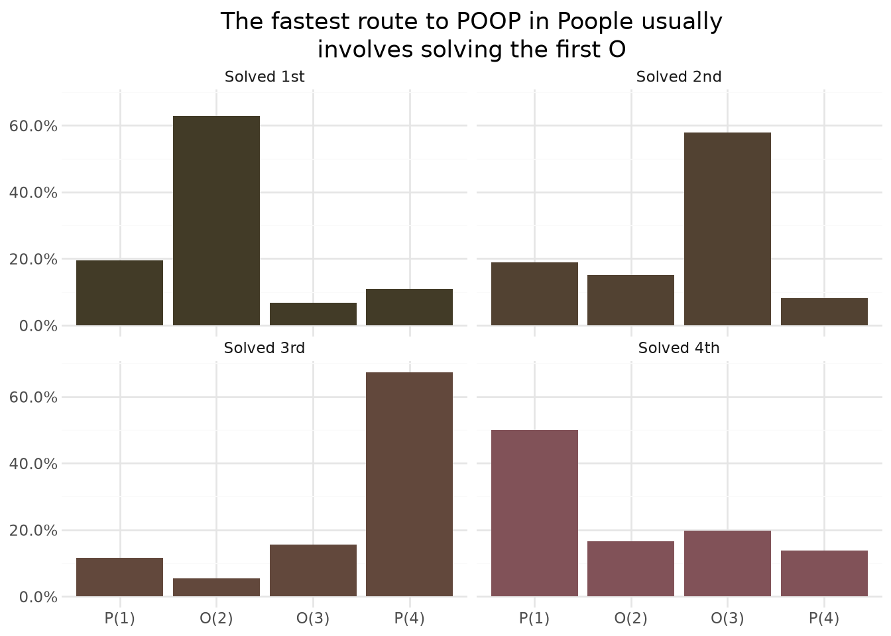
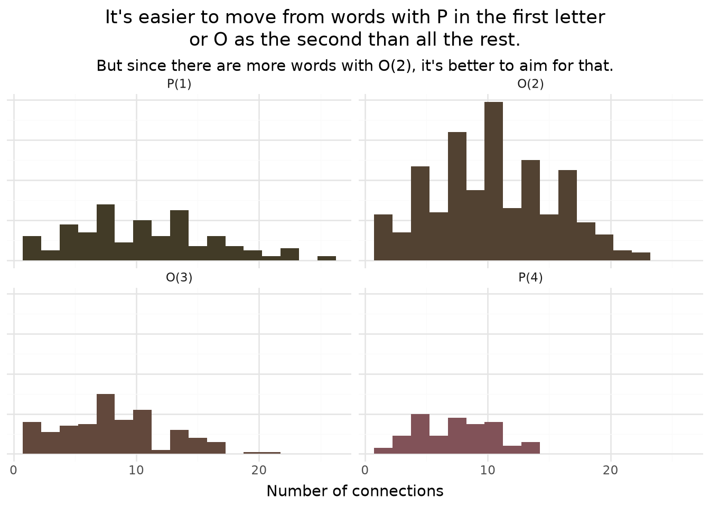

do_all_the_previous_poople_stuff()Poople dictionary read-in and adjacency list created!I swear, I actually do my day job.
Peter Licari ![]()
In my last post, I created a solver for the silly word game Poople. The point of the solver wasn’t to help me cheat, but to appease my impatience: it lets me check my answers immediately after genuinely trying my best if I happened to miss the optimal route. As I’ve been playing, I’ve found myself following a general strategy—and I realized that the solver can help me see if it’s actually close to optimal play. So that’s what this post is about.
The fastest route, in over 60% of cases, is to aim for resolving the second letter (the first “O”) first. This is because there are many, many more words that have an O in its second position than there are with the other letters in the Poople dictionary. It’s also the case that words with O as the second letter have more connections than the rest—though it basically shares the podium with the first P in this regard.
Just to make sure we’re all on the same page: Poople is a word game where you take a four-letter word and try to transmute it to POOP by changing one letter, in place, at a time. The trick is that you have to still make a valid at each step. For example, today’s game1 starts with “GRAN” and you would get to “POOP”:
As I discussed in the last post, “valid” is carrying a bit of weight. Its dictionary is about 60% of the size of Scrabble’s accepted 4 letter words. I’d argue that this inadvertently punishes the exact people who are most interested in the game, but—despite my frustrations with its dictionary—I still play it almost every day. And, as I’ve done so, I’ve settled-in on a strategy for how to get as short a route as possible.
When I first started playing, I started by trying to get the first or the last to be a “P” as quickly as possible. I think that this is probably the most intuitive approach for many players; P is a relatively uncommon consanant in English, so minimizing your way to the rarest part of the word seems like it’d be the way to go.
But, through my play, I’ve organically settled on a different strategy: target the first “O”. “O” is pretty common as far as letters go—and that’s actually why I think it’s been helpful. “P”, being rare, limits your dictionarial2 options. “O” Opens up the space3 of possibilities. So many more words have an “O” in that position that it allows you to traverse other parts of the network of adjoining words much more quickly.
But that’s my hunch! The great thing about having made the solver and a decent home computer is that I can make it go brrrr to investigate such hunches!4
Let’s go ahead and reconstruct the adjacency network using Poople’s dictionary. If you want to see how this process works, you can read this part of the previous post. But, for the sake of brevity, let’s just wave our hands a bit.
do_all_the_previous_poople_stuff()Poople dictionary read-in and adjacency list created!The main thing that we’re changing from last time is with the function that recursively determines the optimum path. Previously, I had it print the list of words that it traversed but return None. This time, I actually want it to return the path. We’re going to use this to see what letter typically gets put into place first.
import random
def optimal_path(word):
word_list = []
if poop_distances[word]['distance'] is None:
print(f'There is no path from POOP to {word}!')
return None
past_word = word
while 'POOP' not in word_list:
word_list.append(past_word)
# Sometimes multiple words can funnel into each other. This just selects one from the options available.
past_word = random.sample(poop_distances[past_word]['previous'], k = 1)[0]
return word_listNow that we have this, we’ll apply it to all of the words in the dictionary, giving us a route for each word.
all_routes = {word:optimal_path(word) for word in all_words}
all_routes['RUNS']['RUNS', 'RUMS', 'RUMP', 'ROMP', 'POMP', 'POOP']Let’s focus only on those words with a length away from POOP of at least 5. That’s the shortest “optimal” route I’ve ever seen in the game5.
all_routes_5 = {word:optimal_path(word) for word in all_words if len(all_routes[word])>5}
len(all_routes_5)1627Dang! That just about halves the size of the dictionary.
Now let’s go ahead and make a function that identifies which step each letter of “POOP” first appears in its correct space. It’s going to have a few tasks ahead of it.
The code chunk below details all of the helper functions that will make that process happen; you can expand it if you’d like. The chunk beneath that is the implementation.
import numpy as np
import pandas as pd
def check_letter_placement(word, letter, place):
""" This function is useful because POOP is 2 distinct letters
in 4 different possible positions.
"""
place = place-1 #Python's annoying 0 index counting
return word[place] == letter
def find_earliest_instance(letter, place, path_list):
"""
This identifies when, given a letter, what place the letter is in
and the path_list to POOP, the first ocurrence in the list of that
letter.
"""
earliest_qualifying_word = None
first_move_seen = 0
for i in range(len(path_list)):
if earliest_qualifying_word is not None:
break
if check_letter_placement(path_list[i], letter, place):
earliest_qualifying_word = path_list[i]
else:
first_move_seen += 1
return first_move_seen
def rank_results_dict(results_dict):
"""
This function will make it so that the lowest number is
ranked 1, second lowest, 2, etc. Useful since the appearance
order of the letters won't be in rank-order
"""
k = [i for i in results_dict.values()]
ranks = np.argsort(np.argsort(k))
return {k:r for k,r in zip(results_dict.keys(), ranks)}
def find_all_earliest_instances(path_list):
"""
Wraps up all of the helpers mentioned above. Pass along the path_list and
it will iterate over the letters and return a ranked-output dictionary.
"""
letter_list = [("P",1),("O",2),("O",3),("P",4)]
results_dict = {"P(1)":None, "O(2)":None, "O(3)":None, "P(4)":None}
for i in range(len(letter_list)):
key = letter_list[i][0] + '('+ str(letter_list[i][1]) +')'
results_dict[key] = find_earliest_instance(letter_list[i][0],letter_list[i][1], path_list)
return rank_results_dict(results_dict)dict_list = []
for word in all_routes_5.keys():
res_dict = find_all_earliest_instances(all_routes_5[word])
res_dict['start'] = word
dict_list.append(res_dict)
results_dataframe = pd.DataFrame(dict_list)
results_dataframe.head()| P(1) | O(2) | O(3) | P(4) | start | |
|---|---|---|---|---|---|
| 0 | 0 | 1 | 2 | 3 | PICK |
| 1 | 3 | 0 | 1 | 2 | LEGS |
| 2 | 3 | 0 | 1 | 2 | DAWN |
| 3 | 2 | 0 | 1 | 3 | NEAR |
| 4 | 1 | 2 | 3 | 0 | LIPA |
Now that we’ve got a dataframe, let’s go ahead and do data-sciency stuff! And by that I mean—tabulate proportions and put them into a pretty graph.6
import plotnine as pn
to_long = pd.melt(results_dataframe, id_vars = 'start', value_vars=['P(1)','O(2)','O(3)','P(4)'])
to_long['variable'] = pd.Categorical(to_long['variable'],categories = ['P(1)','O(2)','O(3)','P(4)'], ordered = True)
to_long['value'] +=1
def percent_labs(values):
ret_list = []
for i in range(len(values)):
ret_list.append(str(np.round(values[i]*100)) + '%')
return ret_list
plot = (
pn.ggplot(data = to_long) +
pn.geom_bar(pn.aes("variable", "..prop..", fill = 'factor(value)', group = 1)) +
pn.facet_wrap("value", labeller=pn.as_labeller({'1':'Solved 1st', '2': 'Solved 2nd','3':'Solved 3rd','4':'Solved 4th'})) +
pn.scale_y_continuous(labels= percent_labs)+
pn.scale_fill_manual(values=['#423B27','#524232','#62483C','#815258']) +
pn.labs(x = '', y ='',
title = 'The fastest route to POOP in Poople usually\ninvolves solving the first O') +
pn.theme_minimal() +
pn.guides(fill='none')+
pn.theme(plot_title=pn.element_text(ha= 'center', ma='center'))
)
plot
Look at that! My first hunch is borne out. In just over 60% of cases, the fastest route to POOP is by solving the first O. The first P is the nearest runner-up—but that’s like me challenging Usain Bolt to a footrace and saying I got second place; it’s not particularly close.
Another thing I found interesting here is that the final P is usually the third one put into place. That tends to track with my experience—I’m using BOOP and LOOP far more than POOL or POOR. It probably reflects the structure of the words most adjacent to POOP. Of those 11 words7, 8 have the ending-P in place, and 6 have the starting-P in place. (For those counting—yes, that adds-up to more than 11. PROP, POMP, and PLOP get counted both times).
Ok, so we’ve determined that my hunch about the pattern is correct. Let’s see if we can corroborate my hypothesis about why this is the case. To reiterate, my supposition is that there are more words with O as the second letter than there are words with P as the first letter. As a corollary, I’m also betting that the average linkage of the words with O as the second letter is greater than those of the other letters. By that I mean that the words that have an O as their second letter tend to have more words adjacent to them than the words that have P as their first letter, O as their third, or P as their fourth.
The code chunk below investigates that.
results_dict = {"P(1)":None, "O(2)":None, "O(3)":None, "P(4)":None}
for t in [("P",1),("O",2),("O",3),("P",4)]:
key = t[0] + '('+ str(t[1]) +')'
results_dict[key] = [len(j) for i,j in adjacency_dictionary.items() if check_letter_placement(i,t[0],t[1]) and i != 'POOP']
print(f'There are {len(results_dict[key])} words that have {t[0]} as letter {t[1]}')There are 184 words that have P as letter 1
There are 471 words that have O as letter 2
There are 155 words that have O as letter 3
There are 100 words that have P as letter 4Dang! There are more words with O as the 2nd letter than there are words with P as first, O as third, and P as fourth combined8.
But how about each one’s average number of connections? We can plot that out to give us our answer.
results_dataframe = pd.DataFrame({i:pd.Series(j) for i,j in results_dict.items()})
to_long = pd.melt(results_dataframe, value_vars=['P(1)','O(2)','O(3)','P(4)']).dropna()
to_long['variable'] = pd.Categorical(to_long['variable'],categories = ['P(1)','O(2)','O(3)','P(4)'], ordered = True)
def percent_labs(values):
ret_list = []
for i in range(len(values)):
ret_list.append(str(np.round(values[i]*100)) + '%')
return ret_list
plot = (
pn.ggplot(data = to_long) +
pn.geom_histogram(pn.aes("value", fill = 'factor(variable)', group = 1)) +
pn.facet_wrap("variable") +
pn.scale_fill_manual(values=['#423B27','#524232','#62483C','#815258']) +
pn.labs(x = 'Number of connections', y ='',
title = 'It\'s easier to move from words with P in the first letter\nor O as the second than all the rest.',
subtitle = "But since there are more words with O(2), it\'s better to aim for that.") +
pn.theme_minimal() +
pn.guides(fill='none')+
pn.theme(axis_text_y = pn.element_blank(),
plot_title=pn.element_text(ha= 'center', ma='center'),
plot_subtitle = pn.element_text(ha='center'))
)
plot
O(2) is definitely more connected than either O(3) and P(4) but P(1) looks like it might be pretty close—especially with that outlier hanging out all the way to the right.
for t in [("P",1),("O",2),("O",3),("P",4)]:
key = t[0] + '('+ str(t[1]) +')'
m = np.mean(results_dict[key]).round(2)
med = np.median(results_dict[key])
print(f'({t[0]}{t[1]}) has an average of {m} and median of {med} connections!')(P1) has an average of 10.52 and median of 10.0 connections!
(O2) has an average of 10.47 and median of 10.0 connections!
(O3) has an average of 8.21 and median of 8.0 connections!
(P4) has an average of 7.4 and median of 8.0 connections!Interesting! The results are close but my second supposition is wrong. P as the first letter has, on average, slightly more connections than O as the second letter. However, in practice, since there’s way more words with O as the second letter, you’ll be better served going for that. So if you’re playing Poople (and, gripes aside, I do still recommend the game), I’d suggest you target solving for that 2nd letter first.
Until next time, friends!
July 17, 2026↩︎
There’s a wonderful irony in the fact that this word about words is entirely made up.↩︎
What, did you think you could read one of my posts and not have a dad joke?! It’s like you don’t know me at all!↩︎
“I was built to play high-end video games and this is the shit you make me do?”—my computer, presumably.↩︎
I could check the game’s source code to be sure of it, but I do want to keep some of the magic alive.↩︎
You don’t want to know how often that suffices.↩︎
BOOP,COOP,POOF,PROP,POOR,LOOP,POMP,PLOP,GOOP,POOL,HOOP. Goddamn, feel like I just spat out a Dr. Suess book.↩︎
“But, Peter, what about words that satisfy multiple letter placement criteria—aren’t you double-counting?” Hush, dear reader, let me have my dramatic point!↩︎
@online{licari2026,
author = {Licari, Peter},
title = {Testing {Poople} {Strategies} with {Python}},
date = {2026-07-17},
url = {https://www.peterlicari.com/posts/poople_strategy_26/},
langid = {en}
}